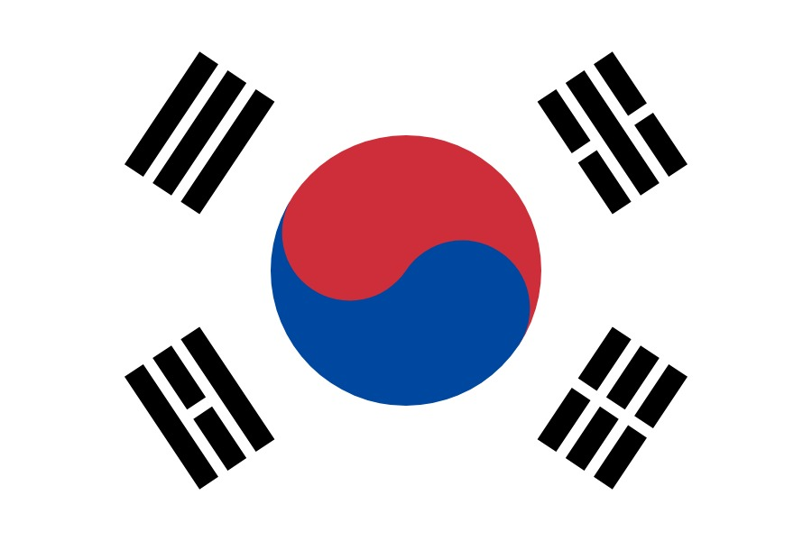
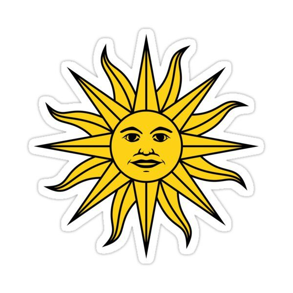
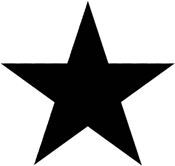

Sale de su grupo siendo el No. 1 ganando contra Uruguay gana los octavos de final 6-1 contra Suiza pero es eliminao en los cuartos de final por Marruecos

Corea del Sur
Sale de su grupo siendo el No. 2 pero pierde en octavos de finales 4-1 contra Brasil

Uruguay
Sale como el No. 3 y queda eliminado antes de los octavos por Portugal

Ghana
Sale de su grupo como el No. 4 y queda eliminado antes de los octavos por Portugal